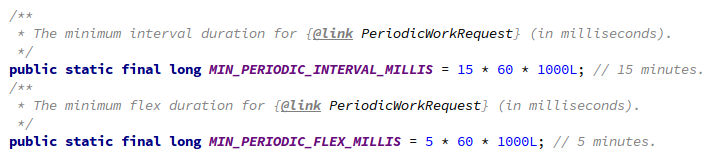
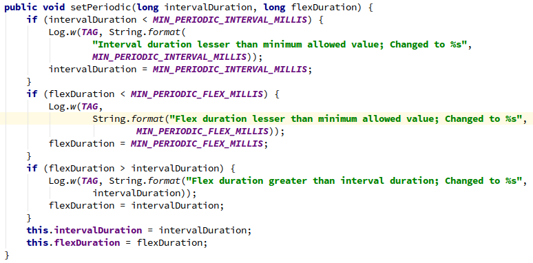
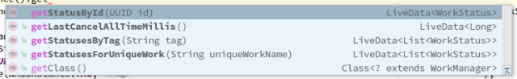
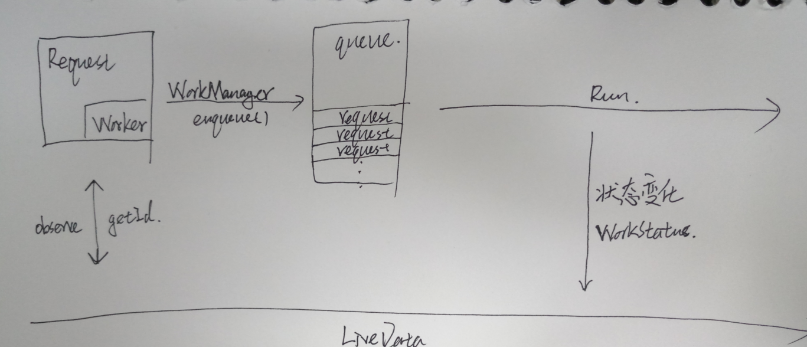

WorkManager is intended for tasks that require a guarantee that the system will run them even if the app exits, like uploading app data to a server. It is not intended for in-process background work that can safely be terminated if the app process goes away; for situations like that, we recommend using ThreadPools.
1 后台异步操作
2 即使app退出依然能够运行
WorkManager的API设计非常简单，每个小模块之间的分工十分明确。从大的角度来看，WorkMnager的使用需要这几样东西：
1 Worker，是一个抽象执行体，需要具体实现，是WorkManager的业务执行模块，所有工作都在doWork方法中执行：
@NonNull
@Override
public Result doWork() {
// do something
return null;
}
public enum Result {
SUCCESS,
FAILURE,
RETRY
}
2 WorkRequest，是一个数据入口，采用链式调用将执行体Worker需要的数据通过方法setInputData注入进去。WorkManager提供了两种Request，OneTimeWorkRequest(只执行一次的request，比如获取一次后台数据)以及PeriodicWorkRequest(可以设置时间间隔多次执行的request，比如定时向后台发送数据)。实例化Request需要将Worker作为Builder参数，每个request都有一个由UUID随即生成的id，然后将创建好的Request添加到WorkManager的队列中：
2.1 OneTimeWorkRequest
Data data = new Data.Builder().putString("key_request_0", "value_0").putString("key_request_1", "value_1").build();
OneTimeWorkRequest mRequest = new OneTimeWorkRequest.Builder(SampleWorker.class)
.setInputData(data).build();
WorkManager.getInstance().enqueue(mRequest);
2.2 PeriodicWorkRequest
// 每12小时执行一次，执行时机不确定，可能在间隔的末尾也可能在任何实际成熟的时候。
PeriodicWorkRequest mRequest0 = new PeriodicWorkRequest.Builder(SampleWorker.class
, 12, TimeUnit.HOURS).build();
// 每12小时执行一次，执行时机不确定，可能在间隔的末尾也可能在任何实际成熟的时候。
if (android.os.Build.VERSION.SDK_INT >= android.os.Build.VERSION_CODES.O) {
PeriodicWorkRequest mRequest1 = new PeriodicWorkRequest.Builder(SampleWorker.class
, Duration.ofHours(12)).build();
}
// 没12小时执行一次，但是从repeatInterval-flexInterval开始执行，且flexInterval <= repeatInterval。
PeriodicWorkRequest mRequest2 = new PeriodicWorkRequest.Builder(SampleWorker.class
, 12, TimeUnit.HOURS
, 10, TimeUnit.HOURS).build();
并且PeriodicWorkRequest有严格的interval时间限制：

但是如果设置的interval小于限制并不会报异常，而是自动采用最小值：

如果不需要WorkManager的运行结果，写到这里就可以了。
3 WorkStatus，结果输出者，包括Worker的完成状态(如下枚举)，对应request的id，tag以及数据(一个Date实例)的输出，WorkStatus作为request的输出需要通过WorkManager的相关方法与LiveData添加监听来获取，当WorkStatus状态变化的时候就会给LiveData回调：
3.1 WorkStatus的状态枚举：
public enum State {
ENQUEUED,
RUNNING,
SUCCEEDED,
FAILED,
BLOCKED,
CANCELLED;
public boolean isFinished() {
return (this == SUCCEEDED || this == FAILED || this == CANCELLED);
}
}
3.2 获取WorkStatus主要有四个方法，都要添加LiveData：

3.3 具体代码：
WorkManager.getInstance().getStatusById(id).observe((LifecycleOwner) mContext, new Observer<WorkStatus>() {
@Override
public void onChanged(@Nullable WorkStatus workStatus) {
switch (workStatus.getState()){
case ENQUEUED:{
// do something
}break;
case RUNNING:{
// do something
}break;
case SUCCEEDED:{
Data output = workStatus.getOutputData();
String requestStr = output.getString(WMConstants.DATA_OUTPUT_KEY_REQUEST, WMConstants.DATA_OUTPUT_DEFAULT_REQUEST);
String outputStr = output.getString(WMConstants.DATA_OUTPUT_KEY_CONTENT, WMConstants.DATA_OUTPUT_DEFAULT_VALUE);
Log.e(WMConstants.TAG, requestStr + " : "+outputStr);
}break;
case FAILED:{
// do something
}break;
case BLOCKED:{
// do something
}break;
case CANCELLED:{
// do something
}break;
}
}
});
那么有一个问题，如果返回结果的时候app已经退出了，但是要进行UI操作怎么办？这已经不是WorkManager可以处理的事情了，实际上这是LiveData的职能范畴。LiveData在返回数据之前会判断绑定时LifecycleOwner的状态，不用说退出，即便是activity/fragment退入后台，也不会返回数据，不用担心造成NPE。这里不费时分析LiveData的原理，有兴趣的同学可以去看看源码，体验一下。

Workmanager对于那些依赖前后返回结果的Task添加了一些使用的可以实现顺序执行的任务链的API。
1 A --> B --> c
WorkManager.getInstance().beginWith(RequestA).then(RequestB).then(RequestC).enqueue();
这里有一个需要注意的地方，任务链的Request的都是OneTimeWorkRequest。为什么？
2 还可以通过WorkContinuation实现更复杂的任务链
A --> B
-->E
C --> D
WorkContinuation chain1 = WorkManager.getInstance()
.beginWith(RequestA)
.then(RequestB);
WorkContinuation chain2 = WorkManager.getInstance()
.beginWith(RequestC)
.then(RequestD);
WorkContinuation chain3 = WorkContinuation
.combine(chain1, chain2)
.then(RequestE);
chain3.enqueue();
每个创建的Request的ID都是经过UUID的随即获取方法随机获取到的，那么就WorkRequest而言我们基本是无法确定一个任务是否正在执行或者在队列中等待pop，所以为了解决这个问题，WorkManager中添加了方法 beginUniqueWork 用来push唯一name的OneTimeWorkRequest：
public final WorkContinuation beginUniqueWork(
@NonNull String uniqueWorkName,
@NonNull ExistingWorkPolicy existingWorkPolicy,
@NonNull OneTimeWorkRequest... work) {
return beginUniqueWork(uniqueWorkName, existingWorkPolicy, Arrays.asList(work));
}
public abstract WorkContinuation beginUniqueWork(
@NonNull String uniqueWorkName,
@NonNull ExistingWorkPolicy existingWorkPolicy,
@NonNull List<OneTimeWorkRequest> work);
Data data = new Data.Builder().putString(WMConstants.DATA_INPUT_KEY_REQUEST, "OneTimeWorkRequest").putString(WMConstants.DATA_INPUT_KEY_CONTENT, "enqueue date:"+formatTime(System.currentTimeMillis(), "HH:mm:ss")).build();
OneTimeWorkRequest mRequest = new OneTimeWorkRequest.Builder(SampleWorker.class)
.setInputData(data).build();
WorkManager.getInstance().beginUniqueWork("unique", ExistingWorkPolicy.REPLACE, mRequest).enqueue();
如果发现队列中包含相同name的任务的话会按照ExistingWorkPolicy中的约束条件进行相应的操作。
public enum ExistingWorkPolicy {
/**
* If there is existing pending work with the same unique name, cancel and delete it. Then,
* insert the newly-specified work.
*/
// 新任务取代旧任务
REPLACE,
/**
* If there is existing pending work with the same unique name, do nothing. Otherwise, insert
* the newly-specified work.
*/
// 忽略新任务
KEEP,
/**
* If there is existing pending work with the same unique name, append the newly-specified work
* as a child of all the leaves of that work sequence. Otherwise, insert the newly-specified
* work as the start of a new sequence.
*/
// 如果已经存在相同name的work，就把新任务添加到queue末尾，否则添加在queue的开头
APPEND
}
还有添加唯一PeriodicWorkRequest的方法enqueueUniquePeriodicWork()，和上面的方法基本一样，只是约束枚举不同，不作赘述。
public enum ExistingPeriodicWorkPolicy {
/**
* If there is existing pending work with the same unique name, cancel and delete it. Then,
* insert the newly-specified work.
*/
// 新任务取代旧任务
REPLACE,
/**
* If there is existing pending work with the same unique name, do nothing. Otherwise, insert
* the newly-specified work.
*/
// 忽略新任务
KEEP
}
1 与常规的异步(AsyncTask, ThreadPool等)有何不同？
在官方给出的文档中可以看出来，WorkManager的出现并不是为了替代这些传统的异步方式。他们最大的不同，就是这些传统的方式在app退出进程被杀死的情况下是会一起被杀死的，而WorkManager可以重启进程(Application会被重新实例化，分配新的PID)，就像守护进程那样。但是这里也许是WorkManager的逻辑还不完善，在我的demo中，当只入列一个OneTimeWorkRequest的时候，杀死进程，进程有一定概率并不会重启。并且这个request会一直处于ENQUEUE状态。
2 为什么能够在app杀死之后重新启动？
针对这个问题先研究一下WorkManager的源码。
WorkManager是个单例，但是不需要在Application中预先初始化，所以是如何初始化的？public class WorkManagerInitializer extends ContentProvider { @Override public boolean onCreate() { // Initialize WorkManager with the default configuration. WorkManager.initialize(getContext(), new Configuration.Builder().build()); return true; } // nothing else }WorkManager的初始化是放在自己包内的一个自定义ContentProvider里面的。这样做有什么好处？ContentProvider的onCreate方法的调用时机实际上在Application的attachBaseContext和onCraete之间，因为已经调用了attachBaseContext所以即便是调用getContext也能获得Application的context。这样至少实现了一种“隐式初始化”，其他好处不明......
flag_0:暂时忽略初始化方法中的new Configuration.Builder().build()
下一个问题，WorkManager中任务queue的执行者是谁？
在每次入列都会调用一个方法->enqueue()，所以从这里开始:@Override public void enqueue() { // Only enqueue if not already enqueued. if (!mEnqueued) { // The runnable walks the hierarchy of the continuations // and marks them enqueued using the markEnqueued() method, parent first. mWorkManagerImpl.getTaskExecutor() .executeOnBackgroundThread(new EnqueueRunnable(this)); } else { Log.w(TAG, String.format("Already enqueued work ids (%s)", TextUtils.join(", ", mIds))); } }这个方法的最终是调用了EnqueueRunnable的run方法，那么：
public void run() { if (mWorkContinuation.hasCycles()) { throw new IllegalStateException( String.format("WorkContinuation has cycles (%s)", mWorkContinuation)); } boolean needsScheduling = addToDatabase(); if (needsScheduling) { scheduleWorkInBackground(); } }这里有一个特别奇怪的方法，暂时忽略
flag_1:暂时忽略addToDatabase()
然后是：
public void scheduleWorkInBackground() { WorkManagerImpl workManager = mWorkContinuation.getWorkManagerImpl(); Schedulers.schedule( workManager.getConfiguration(), workManager.getWorkDatabase(), workManager.getSchedulers()); }这个方法里面我们需要查看第三个方法(有兴趣的人可以看看前两个方法的源码，很绕，不多说)：
public @NonNull List<Scheduler> getSchedulers() { // Initialized at construction time. So no need to synchronize. if (mSchedulers == null) { mSchedulers = Arrays.asList( Schedulers.createBestAvailableBackgroundScheduler(mContext, this), new GreedyScheduler(mContext, this)); } return mSchedulers; }然后：
static @NonNull Scheduler createBestAvailableBackgroundScheduler( @NonNull Context context, @NonNull WorkManagerImpl workManager) { Scheduler scheduler; boolean enableFirebaseJobService = false; boolean enableSystemAlarmService = false; if (Build.VERSION.SDK_INT >= WorkManagerImpl.MIN_JOB_SCHEDULER_API_LEVEL) { scheduler = new SystemJobScheduler(context, workManager); setComponentEnabled(context, SystemJobService.class, true); Log.d(TAG, "Created SystemJobScheduler and enabled SystemJobService"); } else { try { scheduler = tryCreateFirebaseJobScheduler(context); enableFirebaseJobService = true; Log.d(TAG, "Created FirebaseJobScheduler"); } catch (Exception e) { // Also catches the exception thrown if Play Services was not found on the device. scheduler = new SystemAlarmScheduler(context); enableSystemAlarmService = true; Log.d(TAG, "Created SystemAlarmScheduler"); } } try { Class firebaseJobServiceClass = Class.forName(FIREBASE_JOB_SERVICE_CLASSNAME); setComponentEnabled(context, firebaseJobServiceClass, enableFirebaseJobService); } catch (ClassNotFoundException e) { // Do nothing. } setComponentEnabled(context, SystemAlarmService.class, enableSystemAlarmService); return scheduler; } public static final int MIN_JOB_SCHEDULER_API_LEVEL = 23;终于来到了最关键的部分 ---> 根据系统版本以及服务选取最恰当的调度器。
基本规则是这样的API大于23(6.0)，将选用系统的SystemJobScheduler作为底层的调度器，小于23将会优先选择FirebaseJobScheduler作为调度器，如果不存在将会使用系统的SystemAlarmScheduler(类注释：A Scheduler that schedules work using android.app.AlarmManager)
现在只研究第一种情况(我的测试机是这种情况......)
SystemJobScheduler是什么？是个调度器，用来调度任务的，并不是一个线程，也不产生线程，所以，到底是谁在执行任务？
回到flag_0new Configuration.Builder().build()向下一层层深入：
private Configuration(@NonNull Configuration.Builder builder) { if (builder.mExecutor == null) { mExecutor = createDefaultExecutor(); } else { mExecutor = builder.mExecutor; } // ......................... }createDefaultExecutor()方法用来创建一个executor，executor是啥？执行者
private Executor createDefaultExecutor() { return Executors.newFixedThreadPool( // This value is the same as the core pool size for AsyncTask#THREAD_POOL_EXECUTOR. Math.max(2, Math.min(Runtime.getRuntime().availableProcessors() - 1, 4))); }原来WorkManager的最底层的执行者，就是一个ThreadPool，核心数和AsyncTask一样
那么到目前为止可以笼统的得出一个结论：在6.0以上，WorkManager ≈ ThreadPool + SystemJobScheduler + 某种重启机制
那么WorkManager到底是如何重启进程的？
连续看了五个晚上源码的我也许是方向错了也许是不够细心，并没有找到具体机制,只有一些大概的线索......
3 WorkManager在进程杀死后重启进程依然能够执行添加进queue中的任务，难道进程杀死时内存数据没有清空？
即便内存没有清空(不合理)，新的进程(不同的PID)也不能享受同一块内存，所以只有一种可能，保存到本地了。
所以想到了什么？flag_1
每次将任务入队都会调用一个方法addToDatabase()那么是怎样做到的呢(层级太深只给出具体代码):
workDatabase.workSpecDao().insertWorkSpec(workSpec);每个WorkRequest都有一个方法用来获取一个和数据库(Room)相对应的实例的方法getWorkSpec()，获取一个WorkSpec对象：
public class WorkSpec { private static final String TAG = "WorkSpec"; public static final long SCHEDULE_NOT_REQUESTED_YET = -1; @ColumnInfo(name = "id") @PrimaryKey @NonNull public String id; @ColumnInfo(name = "state") @NonNull public State state = ENQUEUED; @ColumnInfo(name = "worker_class_name") @NonNull public String workerClassName; @ColumnInfo(name = "input_merger_class_name") public String inputMergerClassName; @ColumnInfo(name = "input") @NonNull public Data input = Data.EMPTY; @ColumnInfo(name = "output") @NonNull public Data output = Data.EMPTY; @ColumnInfo(name = "initial_delay") public long initialDelay; @ColumnInfo(name = "interval_duration") public long intervalDuration; @ColumnInfo(name = "flex_duration") public long flexDuration; // ............................ }这是Room的数据库表对应的model，Room使用丰富且功能全面的注解来创建数据库。可以看到一边几乎包含所有的信息。
需要注意的是什么？input和output，这说明什么？说明WorkManger不仅可以保存输入还可以保存输出，所以即便是在app杀死后，过一段时间重新进入app，你也可以通过request的id或者tag找到返回的结果甚至相对应的输入数据。那么下一个问题，数据库会一致保存下去吗？
肯定不会。每次创建WorkDataBase都会在create方法中调用回调generateCleanupCallback()，然后执行：private static String getPruneSQL() { return PRUNE_SQL_FORMAT_PREFIX + getPruneDate() + PRUNE_SQL_FORMAT_SUFFIX; } static long getPruneDate() { return System.currentTimeMillis() - PRUNE_THRESHOLD_MILLIS; } private static final long PRUNE_THRESHOLD_MILLIS = TimeUnit.DAYS.toMillis(7); // Delete rows in the workspec table that... private static final String PRUNE_SQL_FORMAT_PREFIX = "DELETE FROM workspec WHERE " // are completed... + "state IN " + COMPLETED_STATES + " AND " // and the minimum retention time has expired... + "(period_start_time + minimum_retention_duration) < "; String COMPLETED_STATES = "(" + SUCCEEDED + ", " + FAILED + ", " + CANCELLED + ")"; // and all dependents are completed. private static final String PRUNE_SQL_FORMAT_SUFFIX = " AND " + "(SELECT COUNT(*)=0 FROM dependency WHERE " + " prerequisite_id=id AND " + " work_spec_id NOT IN " + " (SELECT id FROM workspec WHERE state IN " + COMPLETED_STATES + "))";大概意思就是每次初始化数据库都会删除7天之外的状态是SUCCEEDED，FAILED，CANCELLED的任务，后边还有一条，由于还没仔细研究相关的数据库，没看懂......
到目前为止又可以笼统的得出一个结论在6.0以上，WorkManager ≈ ThreadPool + SystemJobScheduler + Room + 某种重启机制
1 WorkManager到底是如何重启进程的？
2 我的demo日志显示，入队的任务在进程重启之后的执行顺序并不确定，是随机的，为什么？
3 WorkContinuationImpl的then方法在创建实例的时候是默认吧自己的name传进去的，那么就有一个问题，如果之前调用了beginUniqueWork这样的方法赋予了一个unique的name，然后调用then方法组成一个任务链，那么任务链里的request会受到ExistingWorkPolicy的约束条件的影响吗？
public WorkContinuation then(List<OneTimeWorkRequest> work) {
// TODO (rahulrav@) We need to decide if we want to allow chaining of continuations after
// an initial call to enqueue()
return new WorkContinuationImpl(mWorkManagerImpl,
mName,
ExistingWorkPolicy.KEEP,
work,
Collections.singletonList(this));
}